Contents
- Group statistics, sensor level
- grand average
- plot the fields
- t-test per channel for one time point
- Similarity and differences between subjects in 100ms field
- Realign subjects correct fields for head position and size
- t-test per channel for one time point, realigned data
- cluster based permutations statistics
- Compute planar gradient (megplanar) to reduce noise.
- MEG planar statistics for M170
- RMS for all the MEG channels
- RMS for left and right sensors
- RMS for clusters
- Mean cluster value
Group statistics, sensor level
here we run sensor level statistics for reading data where biased ambiguous words were coupled with subordinate and dominant associations (see Harpaz, Lavidor and Goldstein, accepted). we found RH activity for subordinate meanings around 200ms from target word onset.
cd amb
grand average
number the average structures and make a string of names.
domstr=''; substr=''; for subi=1:25 display(['loading subject ',num2str(subi)]) subjn=num2str(subi); load ([subjn,'/DOM/dom.mat']) eval(['dom',subjn,'=dom;']); domstr=[domstr,',dom',subjn]; load ([subjn,'/SUB/sub.mat']) eval(['sub',subjn,'=sub;']); substr=[substr,',sub',subjn]; end cfg=[]; cfg.channel='MEG'; cfg.keepindividual = 'yes'; eval(['gadom=ft_timelockgrandaverage(cfg',domstr,');']); eval(['gasub=ft_timelockgrandaverage(cfg',substr,');']); clear dom* sub*
loading subject 1 loading subject 2 loading subject 3 . . . loading subject 24 loading subject 25 Warning: discarding gradiometer position information because it cannot be averaged the call to "ft_timelockgrandaverage" took 0 seconds and an estimated 96 MB Warning: discarding gradiometer position information because it cannot be averaged the call to "ft_timelockgrandaverage" took 0 seconds and an estimated 69 MB
plot the fields
timepoint=0.2; cfg=[]; cfg.zlim='maxmin'; cfg.xlim=[timepoint timepoint]; cfg.layout = '4D248.lay'; figure; ft_topoplotER(cfg,gasub) title ('Subordinate Meanings') figure; ft_topoplotER(cfg,gadom) title ('Dominant Meanings')
the input is timelock data with 248 channels and 1017 timebins Warning: the trial definition in the configuration is inconsistent with the actual data Warning: reconstructing sampleinfo by assuming that the trials are consecutive segments of a continuous recording averaging trials averaging trial 1 of 25 averaging trial 2 of 25 . . . averaging trial 24 of 25 averaging trial 25 of 25 the call to "ft_timelockanalysis" took 0 seconds and an estimated 0 MB reading layout from file 4D248.lay the call to "ft_prepare_layout" took 0 seconds and an estimated 0 MB the call to "ft_topoplotTFR" took 2 seconds and an estimated 69 MB the call to "ft_topoplotER" took 2 seconds and an estimated 69 MB time=[0.2 0.2] the input is timelock data with 248 channels and 1017 timebins averaging trials averaging trial 1 of 25 . . . averaging trial 25 of 25 the call to "ft_timelockanalysis" took 0 seconds and an estimated 0 MB reading layout from file 4D248.lay the call to "ft_prepare_layout" took 0 seconds and an estimated 0 MB the call to "ft_topoplotTFR" took 2 seconds and an estimated 0 MB the call to "ft_topoplotER" took 2 seconds and an estimated 0 MB time=[0.2 0.2]
 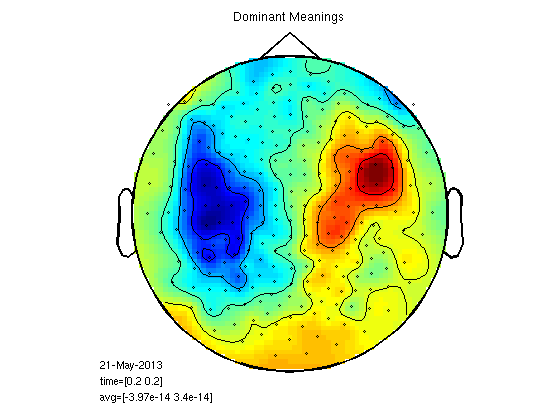
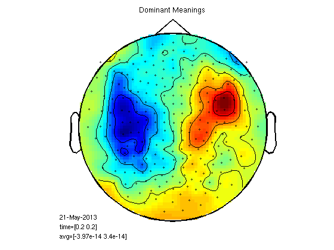 t-test per channel for one time point
cfgs=[]; cfgs.latency=[timepoint timepoint]; cfgs.method='stats'; cfgs.statistic='paired-ttest'; cfgs.design = [ones(1,25) ones(1,25)*2]; [stat] = ft_timelockstatistics(cfgs, gasub,gadom); datadif=gadom; datadif.individual=gasub.individual-gadom.individual; cfg.highlight = 'on'; cfg.highlightchannel = find(stat.prob<0.05); cfg.zlim='maxmin'; figure;ft_topoplotER(cfg, datadif); colorbar; title('Sub - Dom') % I arranged the above script in a function 'statPlot11' to save space % below. run as statPlot11(gasub,gadom,0.2)
selected 248 channels selected 1 time bins selected 1 frequency bins using "statistics_stats" for the statistical testing number of observations 248 number of replications 25 and 25 [-----------------------------------------------------------------------/ ] the call to "ft_timelockstatistics" took 3 seconds and an estimated 0 MB the input is timelock data with 248 channels and 1017 timebins averaging trials averaging trial 1 of 25 . . . averaging trial 25 of 25 the call to "ft_timelockanalysis" took 0 seconds and an estimated 0 MB reading layout from file 4D248.lay the call to "ft_prepare_layout" took 0 seconds and an estimated 0 MB the call to "ft_topoplotTFR" took 2 seconds and an estimated 0 MB the call to "ft_topoplotER" took 2 seconds and an estimated 0 MB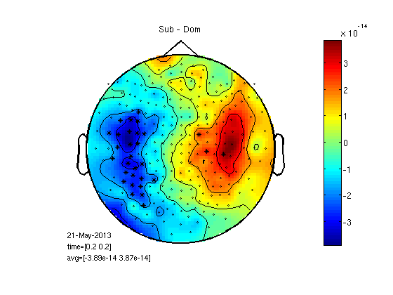
Similarity and differences between subjects in 100ms field
cfg=[]; cfg.layout='4D248.lay'; cfg.interactive='yes'; cfg.xlim=[0.1 0.1]; load 1/DOM/dom figure;ft_topoplotER(cfg,dom); title('SUBJECT 1') load 2/DOM/dom figure;ft_topoplotER(cfg,dom); title('SUBJECT 2') load 8/DOM/dom figure;ft_topoplotER(cfg,dom); title('SUBJECT 8')
reading layout from file 4D248.lay the call to "ft_prepare_layout" took 0 seconds and an estimated 0 MB the call to "ft_topoplotTFR" took 0 seconds and an estimated 0 MB the call to "ft_topoplotER" took 0 seconds and an estimated 0 MB reading layout from file 4D248.lay the call to "ft_prepare_layout" took 0 seconds and an estimated 0 MB the call to "ft_topoplotTFR" took 0 seconds and an estimated 0 MB the call to "ft_topoplotER" took 0 seconds and an estimated 0 MB reading layout from file 4D248.lay the call to "ft_prepare_layout" took 0 seconds and an estimated 0 MB the call to "ft_topoplotTFR" took 0 seconds and an estimated 0 MB the call to "ft_topoplotER" took 0 seconds and an estimated 0 MB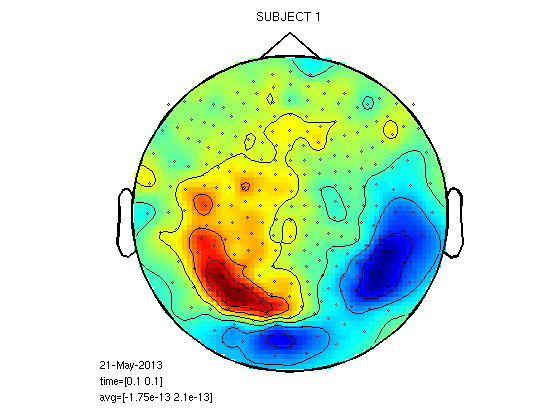 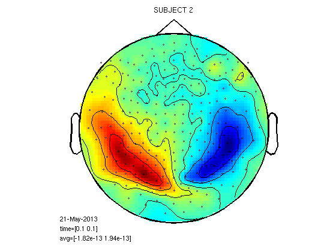 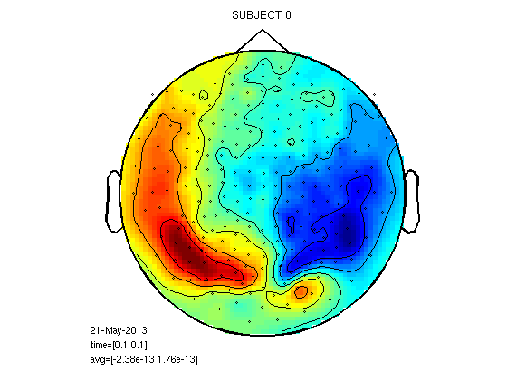
Realign subjects correct fields for head position and size
subjn='2'; load '25/DOM/dom.mat'; cfg=[]; cfg.template={dom.grad}; hs=ft_read_headshape([subjn,'/DOM/hs_file']); [o,r]=fitsphere(hs.pnt); load([subjn,'/DOM/dom.mat']); cfg.inwardshift=0.025; cfg.vol.r=r;cfg.vol.o=o; cfg.trials=1; dom_ra=ft_megrealign(cfg,dom);
the input is timelock data with 271 channels and 1017 timebins selecting 1 trials selecting 1 trials removing 23 non-MEG channels from the data using headmodel specified in the configuration using gradiometers specified in the configuration using headmodel specified in the configuration using gradiometers specified in the configuration mean distance towards template gradiometers is 0.03 m creating dipole grid based on inward-shifted brain surface from volume conductor model 642 dipoles inside, 0 dipoles outside brain the call to "ft_prepare_sourcemodel" took 0 seconds and an estimated 0 MB computing forward model for 642 dipoles Warning: The input units are unknown for points and S/unknown for conductivity pruning 149 from 248, i.e. removing the 149 smallest spatial components computing interpolation matrix #1 computing interpolation matrix #2 computing interpolation matrix #3 pruning 146 from 248, i.e. removing the 146 smallest spatial components realigning trial 1 original -> template RV 53.61 % original -> original RV 8.71 % original -> template -> original RV 9.80 % Warning: showing MEG topography (RMS value over time) in the first trial only adding 23 non-MEG channels back to the data (MLzA, MLyA, MLzaA, MLyaA, MLxA, MLxaA, MRzA, MRxA, MRzaA, MRxaA, MRyA, MCzA, MRyaA, MCzaA, MCyA, GzxA, MCyaA, MCxA, MCxaA, GyyA, GzyA, GxxA, GyxA) the call to "ft_megrealign" took 2 seconds and an estimated 1 MB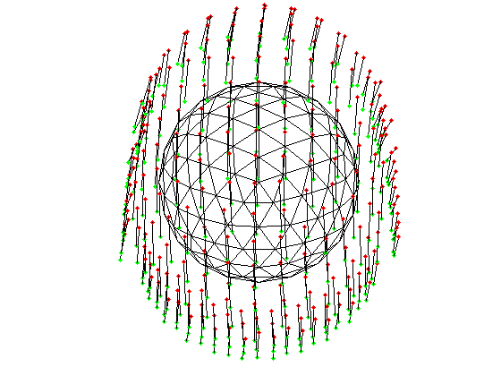 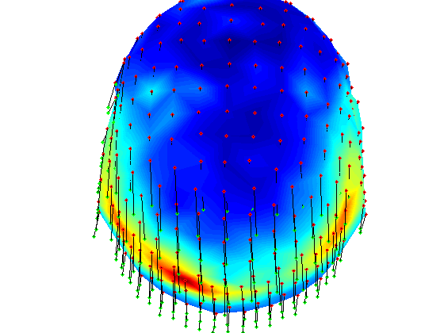 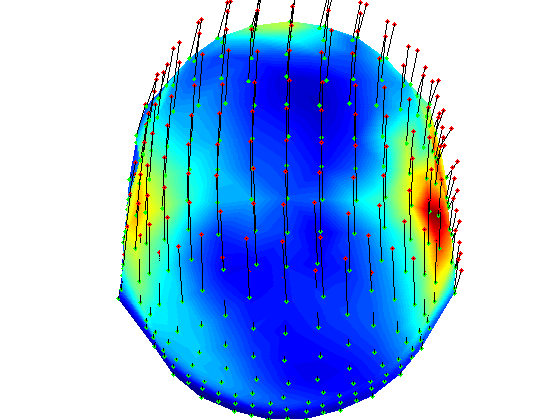
t-test per channel for one time point, realigned data
% here we load grandaverage files after realignment load gadom_ra gadomra=gadom_ra; load gasub_ra gasubra=gasub_ra; % now statistics for 0.2ms statPlot11(gasubra,gadomra,0.2) clear *ra
the input is timelock data with 248 channels and 1017 timebins averaging trials averaging trial 1 of 25 . . . averaging trial 25 of 25 the call to "ft_timelockanalysis" took 0 seconds and an estimated 0 MB reading layout from file 4D248.lay the call to "ft_prepare_layout" took 0 seconds and an estimated 0 MB the call to "ft_topoplotTFR" took 2 seconds and an estimated 0 MB the call to "ft_topoplotER" took 2 seconds and an estimated 0 MB the input is timelock data with 248 channels and 1017 timebins averaging trials averaging trial 1 of 25 . . . averaging trial 25 of 25 the call to "ft_timelockanalysis" took 0 seconds and an estimated 0 MB reading layout from file 4D248.lay the call to "ft_prepare_layout" took 0 seconds and an estimated 0 MB the call to "ft_topoplotTFR" took 2 seconds and an estimated 0 MB the call to "ft_topoplotER" took 2 seconds and an estimated 0 MB selected 248 channels selected 1 time bins selected 1 frequency bins using "statistics_stats" for the statistical testing number of observations 248 number of replications 25 and 25 [-----------------------------------------------------------------------/ ] the call to "ft_timelockstatistics" took 3 seconds and an estimated 0 MB the input is timelock data with 248 channels and 1017 timebins averaging trials averaging trial 1 of 25 . . . averaging trial 25 of 25 the call to "ft_timelockanalysis" took 0 seconds and an estimated 0 MB reading layout from file 4D248.lay the call to "ft_prepare_layout" took 0 seconds and an estimated 0 MB the call to "ft_topoplotTFR" took 2 seconds and an estimated 0 MB the call to "ft_topoplotER" took 2 seconds and an estimated 0 MB
 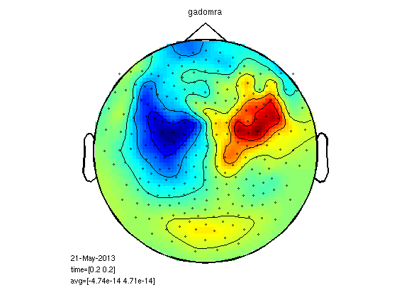 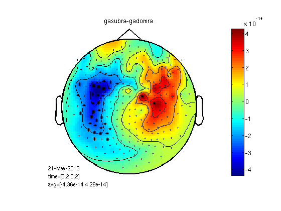
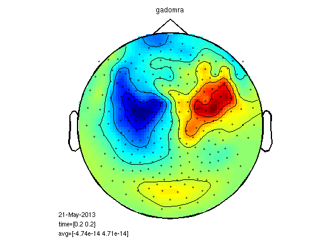 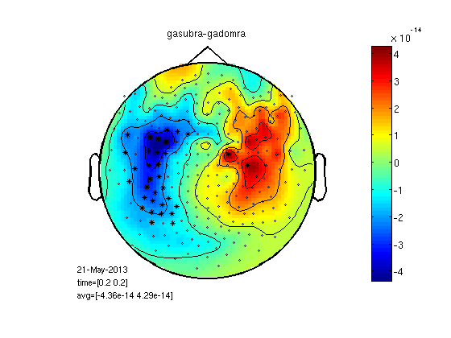 cluster based permutations statistics
Check which neghbouring channels are significantly greater / smaller for sub compared to dom. Then taking clusters of neighbours we run a permutation test to check if deviding the trials by condition is different than divide trials randomly. WHY? clustering means less comparisons, permutations means data doesn't have to be normal disyribution.
load ~/work-drafts/matlab/neighbours % I calculated "neighbourhood" like this: % load '25/DOM/dom.mat'; % cfg=[]; % cfg.method='distance'; % cfg.grad=dom.grad; % cfg.neighbourdist = 0.04; % default is 0.04m % neighbours = ft_prepare_neighbours(cfg, dom); % neighbours=neighbours(1:248); cfg=[]; cfg.neighbours = neighbours; cfg.latency = [0.2 0.2]; cfg.numrandomization = 1000; cfg.correctm = 'cluster'; cfg.uvar = 1; % row of design matrix that contains unit variable (in this case: subjects) cfg.ivar = 2; % cfg.method = 'montecarlo'; cfg.statistic = 'depsamplesT'; cfg.design = [1:25 1:25]; cfg.design(2,:) = [ones(1,25) ones(1,25)*2]; [stat] = ft_timelockstatistics(cfg, gasub, gadom); neg_cluster_pvals = [stat.negclusters(:).prob]; pos_cluster_pvals = [stat.posclusters(:).prob]; % realignment improve statistics? I ran: % [stat_ra] = ft_timelockstatistics(cfg, gasub_ra, gadom_ra); % neg_cluster_pvals = [stat_ra.negclusters(:).prob] % pos_cluster_pvals = [stat_ra.posclusters(:).prob] % prob was about the same % here we select channels of significant clusters for display neg_signif_clust = find(neg_cluster_pvals < stat.cfg.alpha); neg = ismember(stat.negclusterslabelmat, neg_signif_clust); %neg=ismember(neg_signif_clust,stat.negclusterslabelmat) datadif=gasub; datadif.individual=gasub.individual-gadom.individual; cfgp=[]; cfgp.layout='4D248.lay'; cfgp.interactive='yes'; cfgp.xlim=[0.2 0.2]; cfgp.highlight = 'on'; cfgp.highlightchannel = find(neg); ft_topoplotER(cfgp, datadif);colorbar; title(['Sub - Dom significant neg cluster (p=',num2str(neg_cluster_pvals),')']);
selected 248 channels selected 1 time bins selected 1 frequency bins using "statistics_montecarlo" for the statistical testing Warning: doing a two-sided test without correcting p-values or alpha-level, p-values and alpha-level will reflect one-sided tests per tail using "statfun_depsamplesT" for the single-sample statistics constructing randomized design total number of measurements = 50 total number of variables = 2 number of independent variables = 1 number of unit variables = 1 number of within-cell variables = 0 number of control variables = 0 using a permutation resampling approach repeated measurement in variable 1 over 25 levels number of repeated measurements in each level is 2 2 2 2 2 2 2 2 2 2 2 2 2 2 2 2 2 2 2 2 2 2 2 2 2 computing a parametric threshold for clustering computing statistic estimated time per randomization is 0 seconds computing statistic 1 from 1000 computing statistic 2 from 1000 computing statistic 3 from 1000 . . . computing statistic 994 from 1000 computing statistic 995 from 1000 computing statistic 996 from 1000 computing statistic 997 from 1000 computing statistic 998 from 1000 computing statistic 999 from 1000 computing statistic 1000 from 1000 found 3 positive clusters in observed data found 1 negative clusters in observed data computing clusters in randomization computing clusters in randomization 1 from 1000 . . . computing clusters in randomization 997 from 1000 computing clusters in randomization 998 from 1000 computing clusters in randomization 999 from 1000 computing clusters in randomization 1000 from 1000 using a cluster-based method for multiple comparison correction the returned probabilities and the thresholded mask are corrected for multiple comparisons the call to "ft_timelockstatistics" took 27 seconds and an estimated 144 MB the input is timelock data with 248 channels and 1017 timebins averaging trials averaging trial 1 of 25 . . . averaging trial 24 of 25 averaging trial 25 of 25 the call to "ft_timelockanalysis" took 0 seconds and an estimated 0 MB reading layout from file 4D248.lay the call to "ft_prepare_layout" took 0 seconds and an estimated 0 MB the call to "ft_topoplotTFR" took 2 seconds and an estimated 0 MB the call to "ft_topoplotER" took 2 seconds and an estimated 0 MB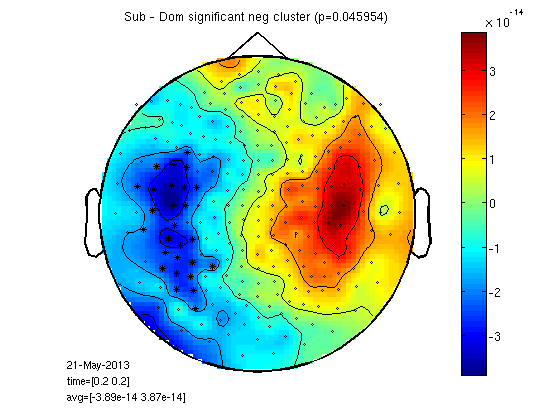
Compute planar gradient (megplanar) to reduce noise.
Relies on dipole topography. One subject, M100.
load 1/DOM/dom cfg=[]; cfg.planarmethod = 'orig'; cfg.neighbours = neighbours; [interp] = ft_megplanar(cfg, dom); cfg=[]; cfg.combinegrad = 'yes'; dom_cp = ft_combineplanar(cfg, interp) cfgp = []; cfgp.xlim=[0.1 0.1]; cfgp.layout = '4D248.lay'; figure; ft_topoplotER(cfgp,dom_cp) title('planar') figure; ft_topoplotER(cfgp,dom) title('raw')
the input is timelock data with 271 channels and 1017 timebins average number of neighbours is 7.85 minimum distance between neighbours is 0.02 m maximum distance between gradiometers is 0.04 m processing trials processing trial 1 from 1 the call to "ft_megplanar" took 1 seconds and an estimated 0 MB the input is timelock data with 519 channels and 1017 timebins Warning: The field cfg.combinegrad is forbidden, it will be removed from your configuration the input is timelock data with 519 channels and 1017 timebins the input is raw data with 271 channels and 1 trials the call to "ft_combineplanar" took 0 seconds and an estimated 0 MB reading layout from file 4D248.lay the call to "ft_prepare_layout" took 0 seconds and an estimated 0 MB the call to "ft_topoplotTFR" took 0 seconds and an estimated 0 MB the call to "ft_topoplotER" took 0 seconds and an estimated 0 MB time=[0.1 0.1] reading layout from file 4D248.lay the call to "ft_prepare_layout" took 0 seconds and an estimated 0 MB the call to "ft_topoplotTFR" took 0 seconds and an estimated 0 MB the call to "ft_topoplotER" took 0 seconds and an estimated 0 MB time=[0.1 0.1]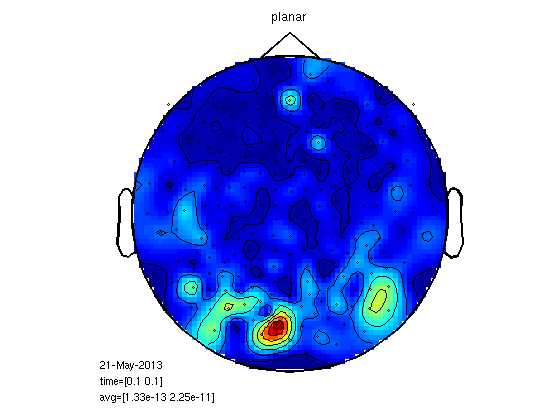

MEG planar statistics for M170
load gadom_cp load gasub_cp statPlot11(gasub_cp,gadom_cp,0.2) % you can also try for M100 statPlot11(gasub_cp,gadom_cp,0.1) % it could make sense to do megrealign after meg planar but It is % impossible with fieldtrip now.
the input is timelock data with 248 channels and 1017 timebins averaging trials averaging trial 1 of 25 . . . averaging trial 25 of 25 the call to "ft_timelockanalysis" took 0 seconds and an estimated 0 MB reading layout from file 4D248.lay the call to "ft_prepare_layout" took 0 seconds and an estimated 0 MB the call to "ft_topoplotTFR" took 2 seconds and an estimated 0 MB the call to "ft_topoplotER" took 2 seconds and an estimated 0 MB the input is timelock data with 248 channels and 1017 timebins Warning: the trial definition in the configuration is inconsistent with the actual data Warning: reconstructing sampleinfo by assuming that the trials are consecutive segments of a continuous recording averaging trials averaging trial 1 of 25 . . . averaging trial 25 of 25 the call to "ft_timelockanalysis" took 0 seconds and an estimated 0 MB reading layout from file 4D248.lay the call to "ft_prepare_layout" took 0 seconds and an estimated 0 MB the call to "ft_topoplotTFR" took 2 seconds and an estimated 0 MB the call to "ft_topoplotER" took 2 seconds and an estimated 0 MB selected 248 channels selected 1 time bins selected 1 frequency bins using "statistics_stats" for the statistical testing number of observations 248 number of replications 25 and 25 [-----------------------------------------------------------------------/ ] the call to "ft_timelockstatistics" took 3 seconds and an estimated 0 MB the input is timelock data with 248 channels and 1017 timebins averaging trials averaging trial 1 of 25 . . . averaging trial 25 of 25 the call to "ft_timelockanalysis" took 0 seconds and an estimated 0 MB reading layout from file 4D248.lay the call to "ft_prepare_layout" took 0 seconds and an estimated 0 MB the call to "ft_topoplotTFR" took 2 seconds and an estimated 0 MB the call to "ft_topoplotER" took 2 seconds and an estimated 0 MB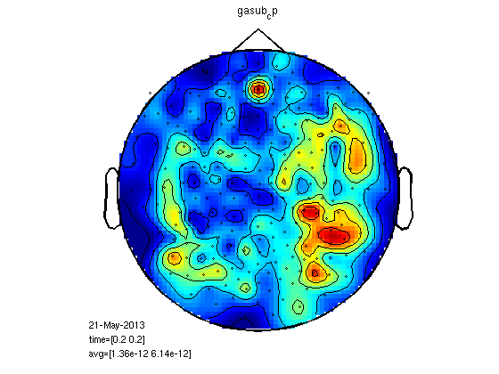
 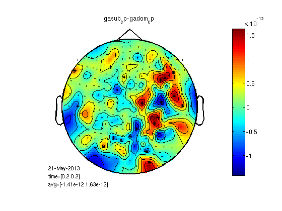
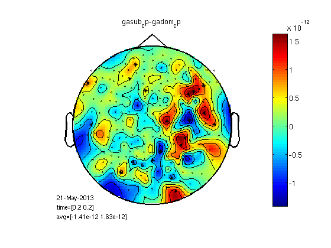 RMS for all the MEG channels
It is possible to calculate RMS for all the channels with clustData. Here we end up with one trace per condition, easy to run a ttest for each time point. We can also calculate the area between the curves.
cfg=[]; cfg.method='RMS'; cfg.neighbours='all'; gadomRMSall=clustData(cfg,gadom); gasubRMSall=clustData(cfg,gasub); % you can also calculate RMS without clustData in less moves: % subRMS=squeeze(sqrt(mean(gasub.individual.^2,2))); % domRMS=squeeze(sqrt(mean(gadom.individual.^2,2))); cfgs=[]; cfgs.method='stats'; cfgs.statistic='paired-ttest'; cfgs.design = [ones(1,25) ones(1,25)*2]; [stat] = ft_timelockstatistics(cfgs, gasubRMSall, gadomRMSall) plot(gadomRMSall.time,squeeze(mean(gadomRMSall.individual,1)),'k'); hold on plot(gasubRMSall.time,squeeze(mean(gasubRMSall.individual,1)),'r'); plot(stat.time(find(stat.prob<0.05)),1.1*squeeze(max(mean(gasubRMSall.individual,1))),'k*'); legend('Dom','Sub','sig') % don't close the figure % area under curve timelim=[0.17 0.2]; samp1=nearest(gadomRMSall.time,timelim(1)); samp2=nearest(gadomRMSall.time,timelim(2)); timeline=gadomRMSall.time(1,samp1:samp2); domcurve=squeeze(gadomRMSall.individual(:,1,samp1:samp2))'; subcurve=squeeze(gasubRMSall.individual(:,1,samp1:samp2))'; domArea=trapz(timeline,domcurve); subArea=trapz(timeline,subcurve); [~,b]=ttest(domArea,subArea) hsub=area(timeline,mean(subcurve,2)); set(hsub,'FaceColor','r','EdgeColor','r') hdom=area(timeline,mean(domcurve,2)); set(hdom,'FaceColor','w','EdgeColor','w')
selected 1 channels
selected 1017 time bins
selected 1 frequency bins
using "statistics_stats" for the statistical testing
number of observations 1017
number of replications 25 and 25
[------------------------------------------------------------------------\]
the call to "ft_timelockstatistics" took 3 seconds and an estimated 0 MB
stat =
mask: [1x1017 double]
prob: [1x1017 double]
dimord: 'chan_time'
label: {'all'}
time: [1x1017 double]
cfg: [1x1 struct]
b =
0.0130
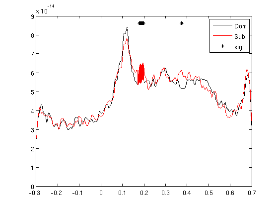 RMS for left and right sensors
cfg=[]; cfg.method='RMS'; cfg.neighbours='LR'; gadomRMS_LR=clustData(cfg,gadom); gasubRMS_LR=clustData(cfg,gasub); subRMS_L=squeeze(mean(gasubRMS_LR.individual(:,1,:),1)); domRMS_L=squeeze(mean(gadomRMS_LR.individual(:,1,:),1)); subRMS_R=squeeze(mean(gasubRMS_LR.individual(:,2,:),1)); domRMS_R=squeeze(mean(gadomRMS_LR.individual(:,2,:),1)); figure; plot(gasub.time,subRMS_L,'r') hold on plot(gasub.time,domRMS_L,'b') ylim([0 1e-13]); plot(gasub.time,subRMS_R,'m') hold on plot(gasub.time,domRMS_R,'c') legend('SUB L','DOM L','SUB R','DOM R') ylim([0 1e-13]);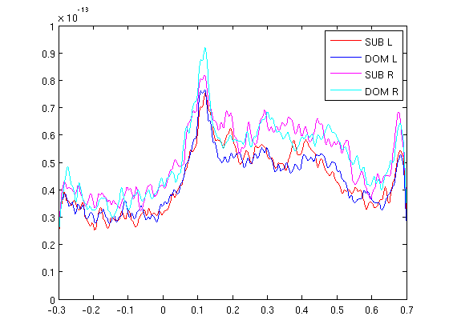
RMS for clusters
Here each channel is replaced with the RMS of its neighbours. This is good for finding why the RMS was significant over hemisphere or globally.
cfg=[];
cfg.neighbours=neighbours;
cfg.method='RMS';
gadomRMS=clustData(cfg,gadom);
gasubRMS=clustData(cfg,gasub);
statPlot11(gasubRMS,gadomRMS,0.2)
the input is timelock data with 248 channels and 1017 timebins averaging trials averaging trial 1 of 25 . . . averaging trial 25 of 25 the call to "ft_timelockanalysis" took 0 seconds and an estimated 0 MB reading layout from file 4D248.lay the call to "ft_prepare_layout" took 0 seconds and an estimated 0 MB the call to "ft_topoplotTFR" took 2 seconds and an estimated 0 MB the call to "ft_topoplotER" took 2 seconds and an estimated 0 MB the input is timelock data with 248 channels and 1017 timebins averaging trials averaging trial 1 of 25 . . . averaging trial 25 of 25 the call to "ft_timelockanalysis" took 0 seconds and an estimated 0 MB reading layout from file 4D248.lay the call to "ft_prepare_layout" took 0 seconds and an estimated 0 MB the call to "ft_topoplotTFR" took 2 seconds and an estimated 0 MB the call to "ft_topoplotER" took 2 seconds and an estimated 0 MB selected 248 channels selected 1 time bins selected 1 frequency bins using "statistics_stats" for the statistical testing number of observations 248 number of replications 25 and 25 [-----------------------------------------------------------------------/ ] the call to "ft_timelockstatistics" took 3 seconds and an estimated 0 MB the input is timelock data with 248 channels and 1017 timebins averaging trials averaging trial 1 of 25 . . . averaging trial 25 of 25 the call to "ft_timelockanalysis" took 0 seconds and an estimated 0 MB reading layout from file 4D248.lay the call to "ft_prepare_layout" took 0 seconds and an estimated 0 MB the call to "ft_topoplotTFR" took 2 seconds and an estimated 0 MB the call to "ft_topoplotER" took 2 seconds and an estimated 0 MB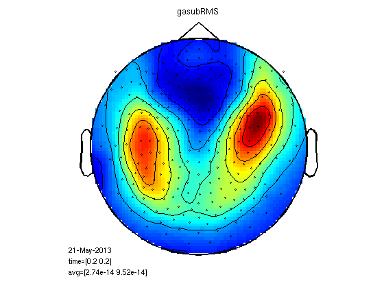 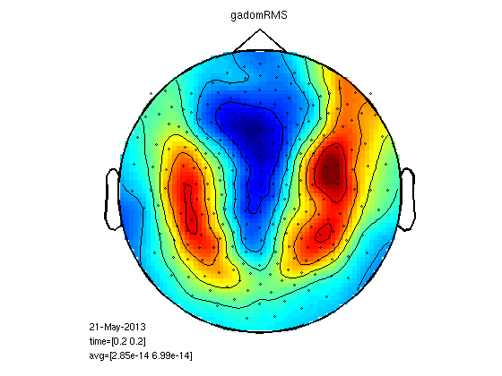 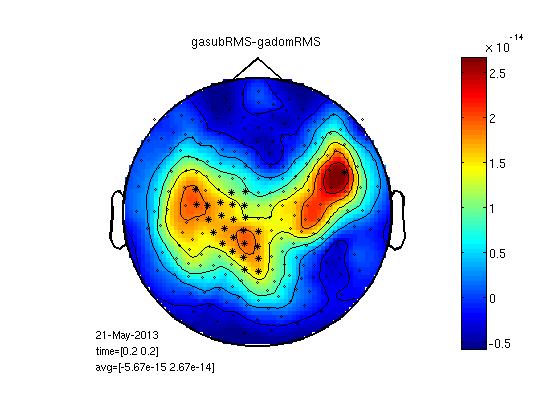
Mean cluster value
This is really smoothing of the raw signal, no RMS.
cfg.method='mean';
gadomMC=clustData(cfg,gadom);
gasubMC=clustData(cfg,gasub);
statPlot11(gasubMC,gadomMC,0.2,[-1e-13 1e-13])
the input is timelock data with 248 channels and 1017 timebins averaging trials averaging trial 1 of 25 . . . averaging trial 25 of 25 the call to "ft_timelockanalysis" took 0 seconds and an estimated 0 MB reading layout from file 4D248.lay the call to "ft_prepare_layout" took 0 seconds and an estimated 0 MB the call to "ft_topoplotTFR" took 2 seconds and an estimated 0 MB the call to "ft_topoplotER" took 2 seconds and an estimated 0 MB the input is timelock data with 248 channels and 1017 timebins averaging trials averaging trial 1 of 25 . . . averaging trial 25 of 25 the call to "ft_timelockanalysis" took 0 seconds and an estimated 0 MB reading layout from file 4D248.lay the call to "ft_prepare_layout" took 0 seconds and an estimated 0 MB the call to "ft_topoplotTFR" took 2 seconds and an estimated 3 MB the call to "ft_topoplotER" took 2 seconds and an estimated 3 MB selected 248 channels selected 1 time bins selected 1 frequency bins using "statistics_stats" for the statistical testing number of observations 248 number of replications 25 and 25 [-----------------------------------------------------------------------/ ] the call to "ft_timelockstatistics" took 3 seconds and an estimated 0 MB the input is timelock data with 248 channels and 1017 timebins averaging trials averaging trial 1 of 25 . . . averaging trial 25 of 25 the call to "ft_timelockanalysis" took 0 seconds and an estimated 0 MB reading layout from file 4D248.lay the call to "ft_prepare_layout" took 0 seconds and an estimated 0 MB the call to "ft_topoplotTFR" took 2 seconds and an estimated 0 MB the call to "ft_topoplotER" took 2 seconds and an estimated 0 MB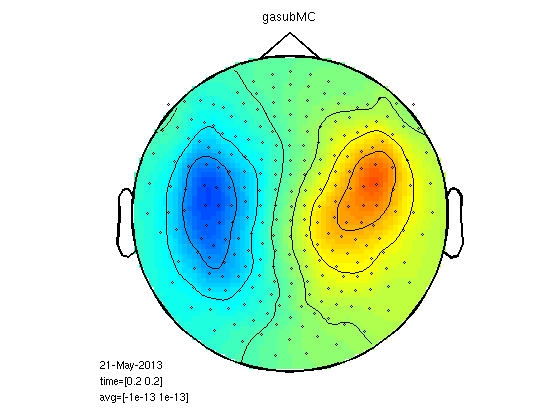 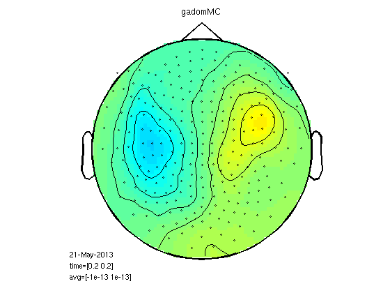 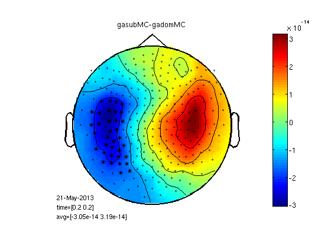